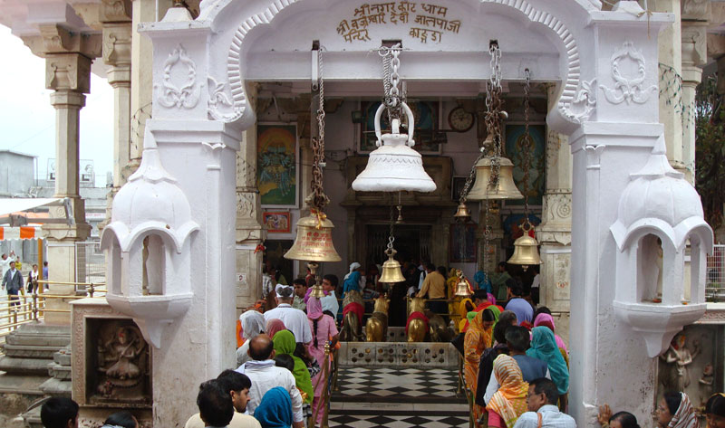
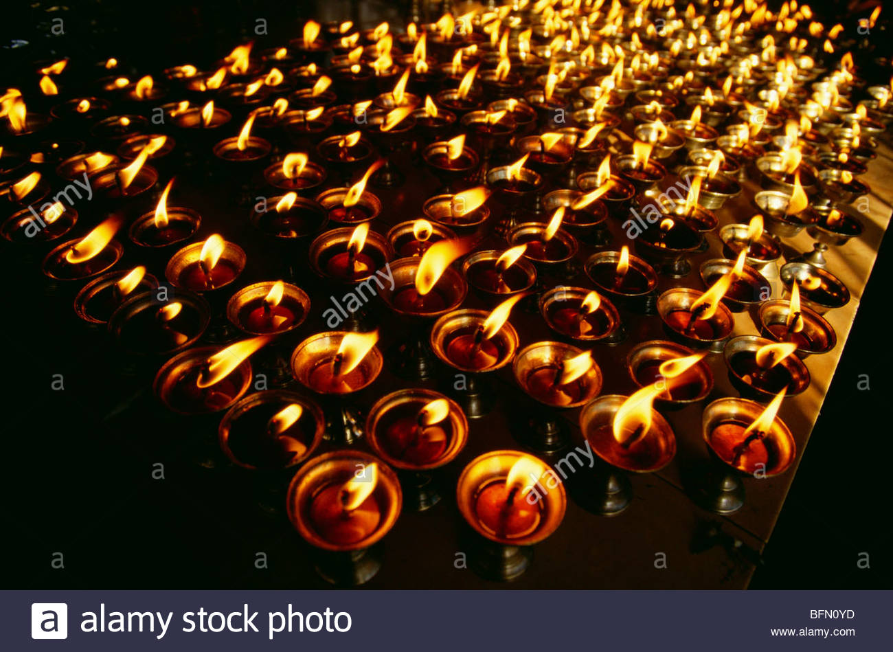
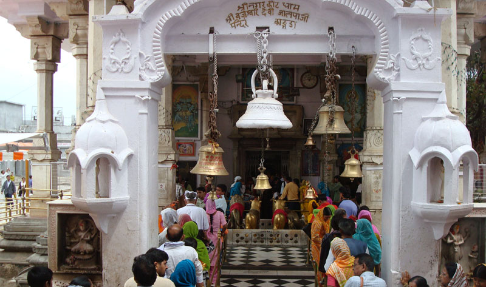
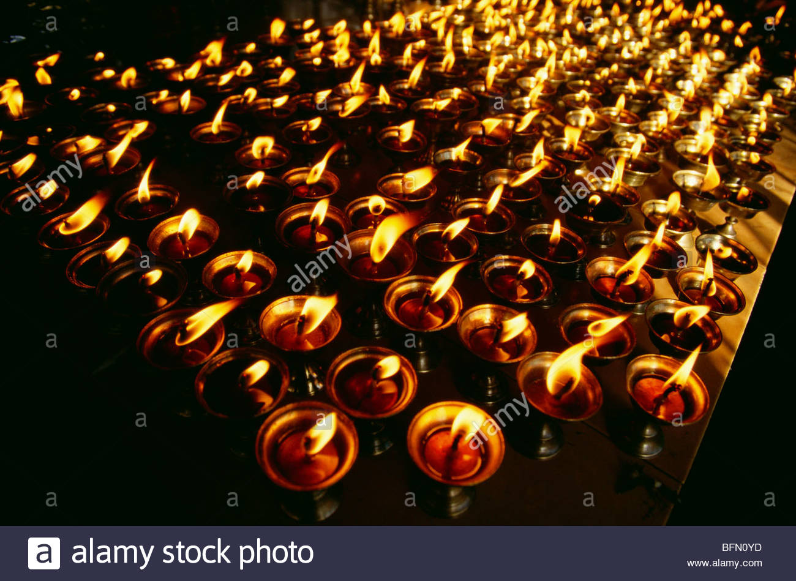

|
The Shree Vajreshwari Devi Mandir is a Hindu temple dedicated to the goddess Vajreshvari, located in the town Nagarkot, in the Kangra district of Himachal Pradesh, India.Vajreshwarila devi temple is also situated in Maharashtra state, District Thane, Taluka:_Bhiwandi.village_Vajreshwari.Hot spring are also situated at vajreshwari village near akloli kund and Ganeshpuri.
Location
The temple of Vajreshvari is located in the town of Nagarkot, Kangra district, Himachal Pradesh, India and is 11 km away from the nearest railway station of Kangra. The Kangra Fort is situated nearby. Its location on a mountain near Chamunda Devi temple, is 16 km from Nagarkot.
Legends
A legend says that after Goddess Sati sacrificed herself in the honor of Lord Shiva in her Fathers Yagya. Shiva took her body on his shoulder and started Tandav. In order to stop him from destroying the world Lord Vishnu divided the body of Sati into 51 parts with his Chakra. The left breast of Sati fell at this spot, thus making it a Shakti Peeth.
History
The original temple was built by the Pandavas at the time of Mahabharatha. Legend says that one day Pandavas saw Goddess Durga in their dream in which she told them that she is situated in the Nagarkot village and if they want them self to be secure they should make a temple for her in that area otherwise they will be destroyed. That same night they made a magnificent temple for her in the Nagarkot village. This temple was looted a number of time by the Muslim invaders. Md Gaznavi looted this temple at least 5 times, in the past it used to contain tonnes of gold and many ghantas made of pure silver. In 1905 the temple was destroyed by a powerful earthquake and was subsequently rebuilt by the government.
Temple structure
The main gate entrance has a Nagarkhana or drum house and is built similar to the Bassein fort entrance. The temple is also surrounded by a stone wall like a fort.
Inside the main area Goddess Vajreshvari is present in the form of Pindi. The temple also have a small temple of Bhairav. In front of the main temple an idol of Dhayanu Bhagat is also present. He had offered his head to the Goddess at the time of Akbar. The present structure has three tombs in it, which is unique in itself.
Temple festivals
Makar sakrantri, which comes on second week of January, is also celebrated in the temple. Legend says that after killing Mahishasura in the battle, devi had got some injuries. to heel those injuries Goddess had applied Makhan (butter) on her body, in Nagarkot. Thus to mark this day the Pindi of Goddess is covered with Makhan and the festival is celebrated for a week in the temple.
BACK
|


fef.jpg)
QAWSFGHJK.jpg) 
